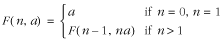
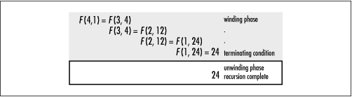
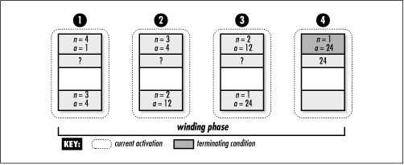

3.2 Tail Recursion
A recursive function is said to be tail recursive if all recursive calls
within it are tail recursive. A recursive call is tail
recursive when it is the last statement that will be executed
within the body of a function and its return value is not a
part of an expression. Tail-recursive functions are
characterized as having nothing to do during the unwinding
phase. This characteristic is important because most modern
compilers automatically generate code to take advantage of
it.
When a compiler
detects a call that is tail recursive, it overwrites the
current activation record instead of pushing a new one onto
the stack. The compiler can do this because the recursive call
is the last statement to be executed in the current
activation; thus, there is nothing left to do in the
activation when the call returns. Consequently, there is no
reason to keep the current activation around. By replacing the
current activation record instead of stacking another one on
top of it, stack usage is greatly reduced, which leads to
better performance in practice. Thus, we should make recursive
functions tail recursive whenever we can.
To understand how tail recursion works, let's
revisit computing a factorial
recursively. First, it is helpful to understand the reason the
previous definition was not tail recursive. Recall that the
original definition computed n!
by multiplying n times (n - 1)! in each activation, repeating
this for n = n - 1 until n = 1. This definition was not tail
recursive because the return value of each activation depended
on multiplying n times the
return value of subsequent activations. Therefore, the
activation record for each call had to remain on the stack
until the return values of subsequent calls were determined.
Now consider a tail-recursive definition for computing n!, which can be defined formally
as:

This definition is similar to the one
presented earlier, except that it uses a second parameter,
a (initially set to 1), which
maintains the value of the factorial computed thus far in the
recursive process. This prevents us from having to multiply
the return value of each activation by n. Instead, in each recursive call,
we let a = na and n = n
- 1. We continue this until n =
1, which is the terminating condition, at which point we
simply return a. Figure
3.4 illustrates the process of computing 4! using this
approach. Notice how there is no work that needs to be
performed during the unwinding phase, a signature of all
tail-recursive functions.

Example
3.2 presents a C function, facttail,
that accepts a number n and computes its
factorial in a tail-recursive manner. This function also
accepts the additional parameter a, which is
initially set to 1. The function facttail is similar to fact, except that it uses
a to maintain the value of the factorial
computed thus far in the recursion. Notice the similarities
between this implementation and the tail-recursive
definition.
Example 3.2.
Implementation of a Function for Computing Factorials in a
Tail-Recursive Manner /*****************************************************************************
* *
* ------------------------------ facttail.c ------------------------------ *
* *
*****************************************************************************/
#include "facttail.h"
/*****************************************************************************
* *
* ------------------------------- facttail ------------------------------- *
* *
*****************************************************************************/
int facttail(int n, int a) {
/*****************************************************************************
* *
* Compute a factorial in a tail-recursive manner. *
* *
*****************************************************************************/
if (n < 0)
return 0;
else if (n == 0)
return 1;
else if (n == 1)
return a;
else
return facttail(n - 1, n * a);
}
The function in Example
3.2 is tail recursive because the single recursive call to
facttail is the last statement
executed before returning from the call. It just happens that
this is the last statement of facttail as well, but this does not
have to be the case. In other words, there could have been
other statements after the recursive call, provided they were
executed only when the recursive call was not. Figure
3.5 illustrates the limited activity on the stack while
computing 4! using this tail-recursive function. Contrast this
with the activity on the stack in Figure
3.3.
 |